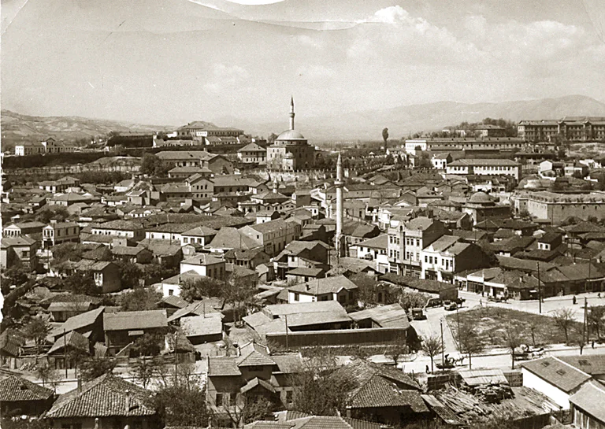
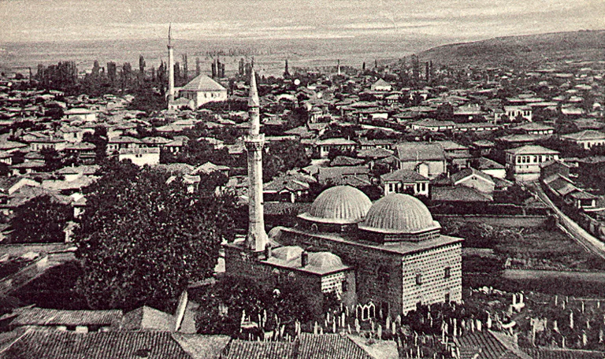
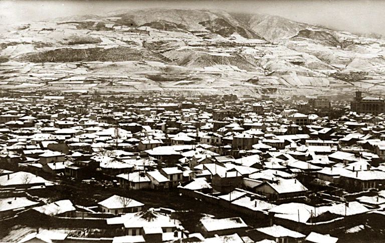
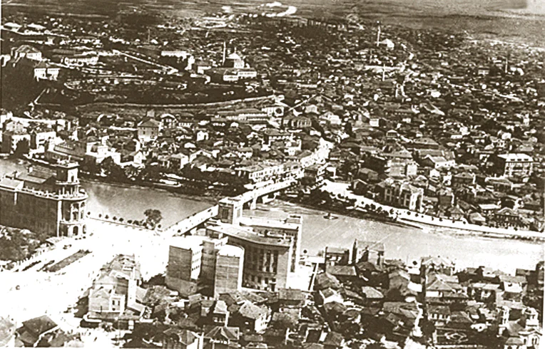

Скопье 1916 - 1917 панорама 2
Документы Балканских войн
- Год
- 1916-1917
- Продолжительность
- 00:12

Скопье в конце XIX века. Вид на незастроенные участки нового квартала на правом берегу Вардара. На заднем плане видна городская крепость - Кале. Справа холм Гази-Баба.

Конец XIX века. Незастроенные участки на правом берегу Вардара. Лишь несколько домов у самой реки. На заднем плане возвышается Скопская крепость - Кале.

Скопье в 1888 году, снимок с холма Гази-Баба в сторону Скопской крепости - Кале.

Вид с Часовой башни на северную часть Скопье со старыми турецкими и македонскими махалами. На заднем плане холм Гази-Баба. (конец XIX века)

Скопье - вид на старую часть со старой чаршией. На заднем плане видна мечеть Мустафы-паши, а справа от неё Скопская крепость - Кале с казармами. На переднем плане видны жилые дома в квартале Гази-Баба - конец XIX века.

Скопье, начало XX века. Вид с Часовой башни на старый общественный, торговый и ремесленный центр с чаршией. Новые архитектурные формы в старой городской структуре. На заднем плане доминируют мечеть Мустафы-паши и крепость с казармами. Под ней мечеть Паши Йигит-бея, старейшая мечеть Скопье (сегодня не существует).

Вид со Скопской крепости - Кале на гору Водно. Прямо под Кале еврейский квартал. Видны Вардар и Каменный мост. Рядом с ним мечеть Бурмали
- начало XX века.

Вид со Скопской крепости - Кале на гору Водно. Прямо под Кале еврейский квартал. Видны Вардар и Каменный мост. Рядом с ним мечеть Бурмали
- начало XX века.

Вид на еврейский квартал и город со Скопской крепости - Кале. На переднем плане синагога (без крыши). Справа Каменный мост - начало XX века.

Вид со Скопской крепости - Кале на Каменный мост и мечеть Бурмали. На этом снимке интересно заметить, как мало город был застроен на правом берегу Вардара. Снимок сделан в конце XIX века. Далеко на заднем плане виден пивоваренный завод, или, как его тогда называли, «Бирария». На переднем плане часть еврейского квартала.

Панорамный вид центрального городского района конца XIX века. В центре турецкий театр. На правом берегу Вардара, у самого Каменного моста, видна мечеть Бурмали.

Снимок сделан со стен Скопской крепости - Кале до Первой мировой войны. У подножия жилые дома еврейского квартала, школа и синагога. Слева церковь Св. Димитрия.

Панорамный снимок со Скопской крепости - Кале в начале XX века. На переднем плане несколько солдат с территории казармы. У подножия видны дома еврейского квартала и Пайко-махалы, далее Каменный мост, а рядом с ним мечеть Бурмали. Дальше тянется новая часть Скопье, а вдали виднеется пивоваренный завод.

Вид со Скопской крепости - Кале на горы Водно и Китка. На среднем плане снимка виден Каменный мост, а рядом с ним мечеть Бурмали.

Скопье во время Первой мировой войны. На снимке виден лагерь сербской армии возле церкви Св. Спаса, колокольня которой видна на заднем плане.

Панорама Скопье - 1920-е. У подножия еврейский квартал со школой и синагогой. Видно строительство Народного театра.
Панорама Скопье (около 1920 года). На этом снимке интересно увидеть гору Водно, точнее её «наготу», в отличие от сегодняшнего дня, когда она покрыта прекрасными лесами. Облесение проведено после окончания Второй мировой войны организованными молодёжными акциями. На переднем плане еврейский квартал с синагогой и еврейской школой.

Вид на Скопье со Скопской крепости - Кале. На переднем плане еврейский квартал с синагогой, школой и Народным театром. В левой части снимка видны Каменный мост и строящийся Офицерский дом - 1920-е.

Скопье, 1920-е. Вид со Скопской крепости - Кале на еврейский квартал.

Панорамный снимок Скопье с Гази-Бабы в сторону Скопской крепости - Кале. (начало XX века)

Мечеть Мустафы-паши на заднем плане, а под ней частично видна мечеть Паши Йигит-бея, старейшая мечеть Скопье. (сегодня не существует)

Вид на Скопье с Гази-Бабы. На переднем плане мелкая застройка жилых махал. На заднем плане мечеть Мустафы-паши и казармы в южной и северной части крепости - Кале.

Вид на старую часть города на левом берегу Вардара. На переднем плане частные жилые дома. В центре комплекс старой скопской чаршии. На заднем плане доминирует мечеть Мустафы-паши, а за ней городская тюрьма и казармы на Кале. Под мечетью Мустафы-паши - мечеть Паши Йигит-бея, старейшая мечеть Скопье (сегодня не существует). (1920-е)

Панорама старой городской структуры, изменённой европеизацией и строительством зданий с классическими, эклектичными и другими стилевыми чертами. Снимок сделан с Часовой башни в сторону мечети Мустафы-паши. Справа видна Скопская крепость - Кале с казармами - 1920-е.

Чаир - старая часть города (ныне община Чаир). На переднем плане мечеть Гази Иса-бея, а на заднем - мечеть Яхья-паши. - около 1920 года

Панорама Скопье - левый берег с районом Чаир и частью Гази-Бабы. На переднем плане мечеть Гази Иса-бея, а на заднем - мечеть Яхья-паши. (1920-е)

Часовая башня - построена в 1566-72 гг. На заднем плане мечети Гази Иса-бея и Яхья-паши - 1920-е.

Панорама старой части города в сторону Гази-Бабы. Вид со Скопской крепости - Кале. Крайняя справа - мечеть султана Мурада, слева от неё Часовая башня. На той же линии слева видна мечеть Гази Иса-бея - 1920-е.

Панорамный вид центрального городского района. - 1920-е.

Зимний пейзаж центральной части города. На переднем плане хаотично застроенные здания, на месте которых позже был построен Народный банк. Терраса на видимой части здания - летний кинотеатр. Два столба в конце держат экран, а на пустом месте ставили стулья для зрителей. Слева вверху видна Скопская крепость - Кале. (1920-е)

Аэрофотоснимок центральной части города (около 1928 года). Доминируют Офицерский дом, Каменный мост, Народный театр и еврейский квартал. Выше по течению Вардара виден деревянный мост к Народному театру. Вверху справа видна часть Кале. На переднем плане часть района Ново-маало. Снимок сделан летом - река сильно обмелела.

Аэрофотоснимок центральной части города (около 1928 года). Доминируют Офицерский дом, Каменный мост, Народный театр и еврейский квартал. Выше по течению Вардара виден деревянный мост к Народному театру. Вверху справа видна часть Кале. На переднем плане часть района Ново-маало. Снимок сделан летом - река сильно обмелела.

Панорамный аэрофотоснимок Скопье. Охвачен в основном правый берег Вардара, где доминирует Офицерский дом. Справа дворец Ристича. Перед ним площадь с благоустроенной зеленью в центре. Видны и фаэтоны, для которых площадь была главной стоянкой. Оба берега соединяет Каменный мост. Внизу справа виден Народный театр - прекрасное здание, о котором тоскуют многие старые скопчане.

Панорамный снимок левой части города с Каменным мостом и кварталами: слева еврейский, справа Пайко-махала. Справа от моста памятник павшим в Балканских войнах перед Оттоманским банком. На заднем плане видны части мечетей и Часовая башня, а также районы Чаир и Гази-Баба. (1920-е)

Панорама Скопье, точнее левой набережной Вардара с частью еврейского квартала, Пайко-махалой и Каменным мостом. (1920-е)

Вид на Каменный мост с башни Офицерского дома. У самого моста справа находился кабинет зубного врача д-ра Рубена. Чуть правее - здание Оттоманского банка. Между ними была маленькая площадь со стоянкой фаэтонов. А в центре площади стоял памятник павшим борцам - около 1927 года.

Вид на Каменный мост с башни Офицерского дома. У самого моста справа находились кабинет зубного врача д-ра Рубена и Земледельческий банк. Справа здание Оттоманского банка. Между ними была маленькая площадь со стоянкой фаэтонов. А в центре площади стоял памятник павшим в Балканских войнах - около 1927 года.

Вид на Каменный мост с башни Офицерского дома. У самого моста справа находился кабинет зубного врача д-ра Рубена. Чуть правее - здание Оттоманского банка. Между ними была маленькая площадь со стоянкой фаэтонов. А в центре площади стоял памятник павшим борцам - около 1927 года.

Вид на Каменный мост через Вардар и часть левого берега, то есть на Пайко-махалу, снятый с башни Офицерского дома. У самого моста справа находился кабинет зубного врача д-ра Рубенса. Справа здание Оттоманского банка. Между ними была маленькая площадь со стоянкой фаэтонов. А в центре площади стоял памятник павшим в Балканских войнах - около 1927 года.

Панорамный снимок - вид на Каменный мост со Скопской крепостью - Кале на заднем плане и еврейским кварталом - 1920-е.
.

Скопье после 1930 года. Слева Народный банк, справа Офицерский дом. На переднем плане часть минарета мечети Ибни Пайко и дом зубного врача д-ра Рубена. На маленькой площади была пекарня с самыми вкусными симитами в Скопье и стоянка фаэтонов для перевозки горожан.

Вид на Вардар со Скопской крепостью - Кале, а справа угадывается город. Видны Офицерский дом и Народный банк. - 1930-е

Прекрасный снимок города и течения Вардара. Слева Скопская крепость - Кале. В центре видны Офицерский дом и Народный банк. Справа гора Водно, а вдали очертания горы Китка. - 1930-е

Прекрасный вид на течение Вардара с горой Водно и районом Буняковец. Видны Офицерский дом и Народный банк. (1930-е)

Вид на район Буняковец - 1930-е, с частью городского парка в правой части снимка.

Часть новопостроенного района Буняковец в 1920-е годы. Видны двухэтажные дома скромной архитектуры.

Вид на район Буняковец, 1930-е.

Вид на район Буняковец, который сегодня находится в центральной части города. Виден ряд жилых домов, построенных по градостроительному плану района.

Прекрасный панорамный зимний пейзаж. Снимок сделан со Скопской крепости - Кале в сторону горы Водно. В правой средней части видны Офицерский дом и Хозяйственно-торговая палата.

Вид на Каменный мост через Вардар. На другом берегу: слева Народный банк, справа Офицерский дом.

Панорама Скопье - снимок со Скопской крепости - Кале. Доминируют два здания: справа Офицерский дом, слева Народный банк. На переднем плане еврейский квартал. (1930-е)

Аэрофотоснимок центральной части города. Видна площадь с Офицерским домом и Народным банком. Выше видны Народный театр и деревянный мостик.

Аэрофотоснимок города. Охвачены площадь с Офицерским домом, Народным банком, Хозяйственной палатой, кварталы - еврейский и Пайко-махала - и Каменный мост. Слева вверху видна вся городская крепость - Кале с казармой. Рядом с ней мечеть Мустафы-паши, а на заднем плане угадывается мечеть Яхья-паши.

Аэрофотоснимок кафедрального собора Св. Богородицы в Скопье, построенного в 1835 году (в центре, с высокой колокольней), и церкви Св. Мины 1902 года (слева, с двумя колокольнями). Вокруг - Пайко-махала.

Скопье, 1930-е. Старая часть города. Вид через окно с железной решёткой старого турецкого здания.

Панорама города. Крайняя слева - мечеть султана Мурада, справа от неё Часовая башня. Крайняя справа - мечеть Гази Иса-бея. На заднем плане видны Народный банк и Офицерский дом, а за ними возвышается гора Водно. (1930-е)

Панорама города. На заднем плане мечеть султана Мурада, а справа от неё Часовая башня. Крайняя справа - мечеть Гази Иса-бея. На заднем плане видны Народный банк и Офицерский дом. (1930-е)

Аэрофотоснимок города. Внизу видны Каменный мост и Офицерский дом. Выше по течению деревянный мостик, ведущий к Народному театру и еврейскому кварталу. Вверху Скопская крепость - Кале с казармой. Снято 26 июня 1933 года в 10 часов утра.

Пустой незастроенный участок перед нынешним Музеем города Скопье. Слева видны гостиницы «Бристоль» и «Сербский король» на главной улице, ведущей к площади. На той же улице, в центре снимка, виден дворец Кранга. (1930-е)

Аэрофотоснимок площади. На переднем плане Народный банк с задней стороны, а справа от него Хозяйственно-торговая палата. Напротив Народного банка Офицерский дом. Справа видны Вардар и часть Каменного моста. Выше по течению виден деревянный мост к Народному театру, который также виден в правом верхнем углу снимка.


Документы Балканских войн
 Акведук4 открытки
Акведук4 открытки Кале30 открыток
Кале30 открыток Мосты60 открыток
Мосты60 открыток Набережная58 открыток
Набережная58 открыток Площадь46 открыток
Площадь46 открыток Здания66 открыток
Здания66 открыток Христианские храмы19 открыток
Христианские храмы19 открыток Мусульманские здания33 открытки
Мусульманские здания33 открытки Офицерский дом29 открыток
Офицерский дом29 открыток Театр28 открыток
Театр28 открыток Железнодорожный вокзал13 открыток
Железнодорожный вокзал13 открыток Школы36 открыток
Школы36 открыток Парки12 открыток
Парки12 открыток Рынки18 открыток
Рынки18 открыток Улицы38 открыток
Улицы38 открыток Панорама I60 открыток
Панорама I60 открыток Панорама II30 открыток
Панорама II30 открыток Коллажи55 открыток
Коллажи55 открыток Наводнения9 открыток
Наводнения9 открыток Землетрясение27 открыток
Землетрясение27 открыток Скопье 200026 открыток
Скопье 200026 открыток